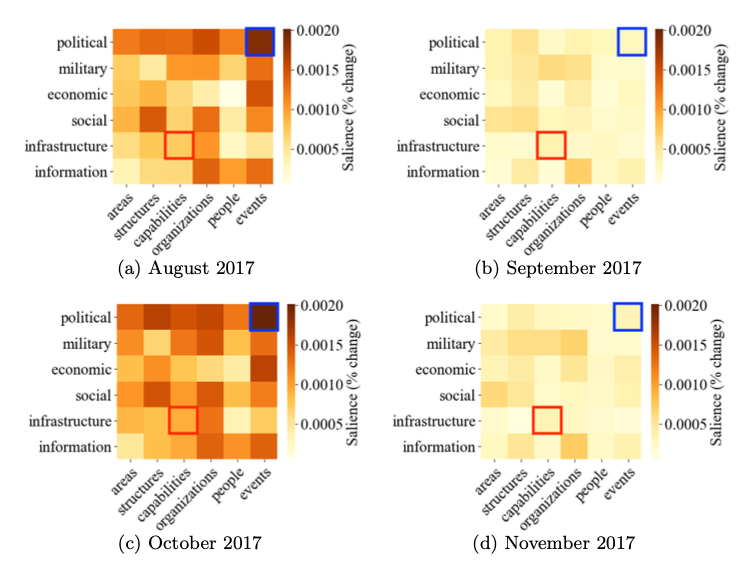
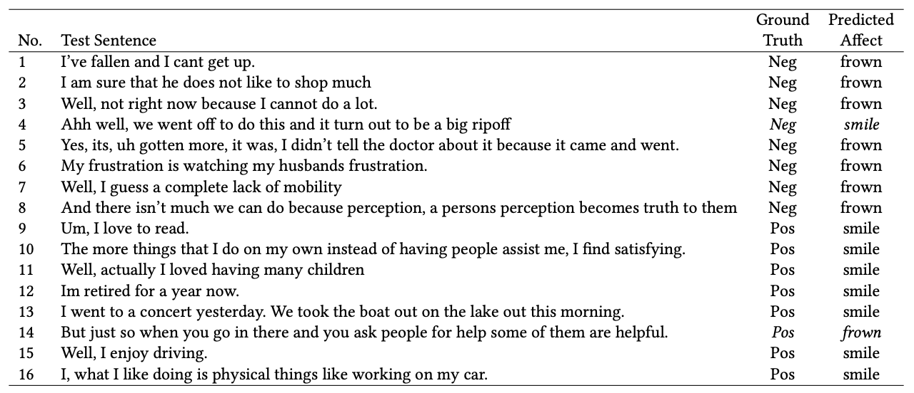
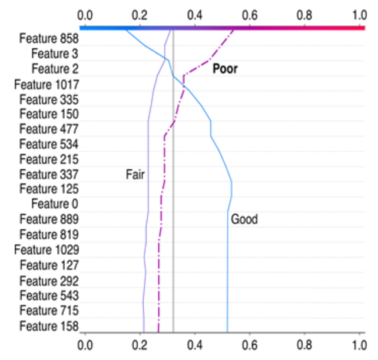
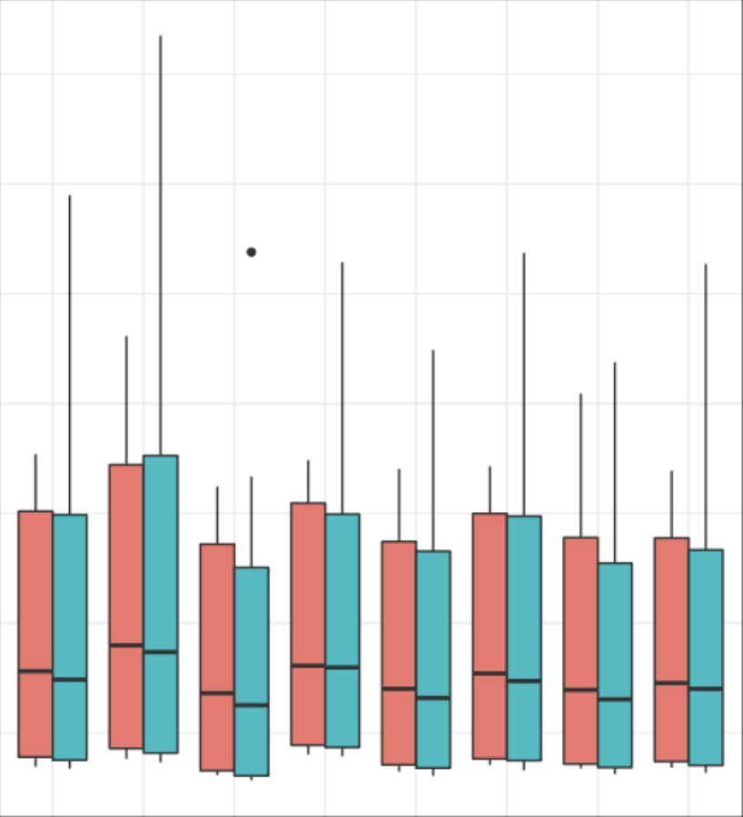

Discovering temporal trends in online corpora

An NLP approach to quantify dynamic salience of
predefined topics in a text corpus
|
(download)
A. Bock, A. Palladino,
S. Smith-Heisters, I. Boardman, E. Pellegrini,
E.J. Bienenstock, A. Valenti
The proliferation of news media available online simultaneously presents a valuable resource and significant challenge to analysts
aiming to profile and understand social and cultural trends in a geographic location of interest. While an abundance of news reports documenting significant events, trends, and responses provides a more democratized picture of the social characteristics of a location, making sense
of an entire corpus to extract significant trends is a steep challenge for
any one analyst or team. Here, we present an approach using natural
language processing techniques that seeks to quantify how a set of predefined topics of interest change over time across a large corpus of text.
We found that, given a predefined topic, we can identify and rank sets
of terms, or n-grams, that map to those topics and have usage patterns
that deviate from a normal baseline. Emergence, disappearance, or significant variations in n-gram usage present a ground-up picture of a topic’s
dynamic salience within a corpus of interest.
Sentiment analysis for assisted clinical communication

Individuals with Parkinson’s disease (PD) often exhibit facial masking (hypomimia), which causes
reduced facial expressiveness. This can make it difficult for those who interact with the person to
correctly read their emotional state and can lead to problematic social and therapeutic interactions. In
this article, we develop a probabilistic model for an assistive device, which can automatically infer the
emotional state of a person with PD using the topics that arise during the course of a conversation. We
envision that the model can be situated in a device that could monitor the emotional content of the
interaction between the caregiver and a person living with PD, providing feedback to the caregiver in
order to correct their immediate and perhaps incorrect impressions arising from a reliance on facial
expressions. We compare and contrast two approaches: using the Latent Dirichlet Allocation (LDA)
generative model as the basis for an unsupervised learning tool, and using a human-crafted sentiment
analysis tool, the Linguistic Inquiry and Word Count (LIWC). We evaluated both approaches using
standard machine learning performance metrics such as precision, recall, and F1scores. Our performance
analysis of the two approaches suggests that LDA is a suitable classifier when the word count in
a document is approximately that of the average sentence, i.e., 13 words. In that case, the LDA model
correctly predicts the interview category 86% of the time and LIWC correctly predicts it 29% of the time.
On the other hand, when tested with interviews with an average word count of 303 words, the LDA
model correctly predicts the interview category 56% of the time and LIWC, 74% of the time. Advantages
and disadvantages of the two approaches are discussed.
AI-augmented human task analysis

Human instructors must monitor and react to multiple, simultaneous
sources of information when training and assessing complex behaviors and maneuvers. The difficulty of this task requires the instructor to make mental inferences and approximations, which may result in less than optimal training outcomes. We present a novel performance monitoring and evaluation system that
automatically analyzes and contextualizes flight control and system data streams
from high-fidelity aircraft simulators to support, validate, and augment an instructor’s evaluative judgments during pilot training. We present initial results
from the CAMBIO system, which leverages machine learning to assess a pilot
trainee’s performance in executing flight procedures. CAMBIO’s machine learning approach currently achieves 80% accuracy in performance categorization.
Optimizing agent swarming capabilities

We present the results of a suite of experiments
conducted with a 2D simulation of a multi-agent area coverage
problem. Agents perform a basic behavior of moving in a straight
line and responding to collisions by setting a new random
heading. Agents are optionally equipped with a subset of three
additional capacities: a timer that causes the agent to alter
its heading at regular intervals, a surface sensor that detects
areas that have not yet been covered, and an agent sensor
that detects the proximity of other agents. Our experimental
conditions included all combinations of these features and also
varied the task environment and the number of agents deployed.
We found that the usefulness of feature configurations depends
upon the task environment, number of agents deployed, and the
metric used to determine performance. The surface sensor feature
became more useful as the number of agents increased, while the
agent proximity sensor became less useful. The surface sensor was
generally useful early in the simulation, but became a hindrance
once the task was nearly complete. With one performance
metric, each of the three features alone was detrimental, while
a configuration combining them together was beneficial.